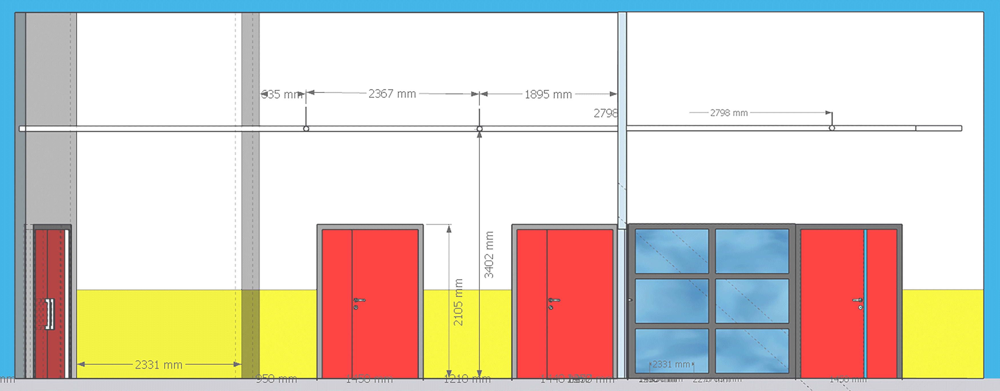
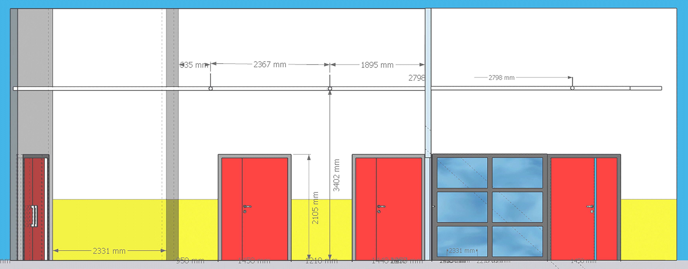

En tant que professionnels qualifiés nous accompagnons et guidons les élèves lors de plusieurs scéances d’atelier vers la création de fresques murales depuis la conception initiale jusqu'à la réalisation finale.
Nous construisons chaque projet en fonction des élèves afin que l’oeuvre finale corresponde à leurs idées et soit en accord avec l'esprit de l'établissement.
Nous croyons en l'impact positif de l'art sur l'éducation. Les ateliers ne sont pas seulement une expérience artistique, mais une opportunité pour les élèves de laisser leur empreinte créative sur leur environnement éducatif, renforçant ainsi le sentiment d'appartenance et de fierté.
Nous fournissons tout le matériel nécessaire et veillons à ce que chacun.e puisse contribuer de manière significative.
à propos

Après plusieurs années en tant que peintre en batiment et décoration,
Jimmy Lorcy est aujourd’hui Dessinateur, Artiste 3D, touchant à de multiples diciplines artistiques.


Auto-entrepreneur, Dessinateur, Graphiste depuis presque 10 ans,
Simon Pétillon crée des illustrations pour des
studios de jeux, d’animation ou pour des particuliers. Titulaire du Bafa spécialité Arts.
Basés à Rennes et à Quimper nous collaborons pour intervenir ensemble, principalement dans la région Bretagne.
Exploration Créative :
Encourager les élèves à explorer leur créativité tout en travaillant
ensemble pour créer des œuvres d'art murales qui s’intègrent à leur cadre éducatif.
Collaboration et Esprit d'Équipe :
Partager des idées, apprendre l'importance de la collaboration et du travail d'équipe.
Personnalisation Pédagogique :
Chaque atelier est adapté aux besoins spécifiques de l'école, intégrant les thèmes éducatifs
de l'établissement et ses singularités pour créer une œuvre qui résonne avec la communauté éducative.
Impact Visuel Positif :
Les fresques murales apportent une touche artistique unique aux espaces,
créant un environnement dynamique et inspirant pour les élèves, les enseignants et les visiteurs.


 
